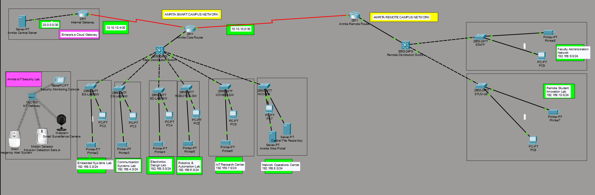
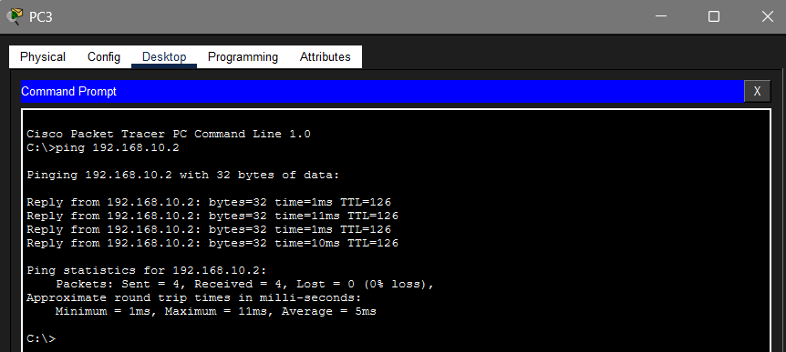
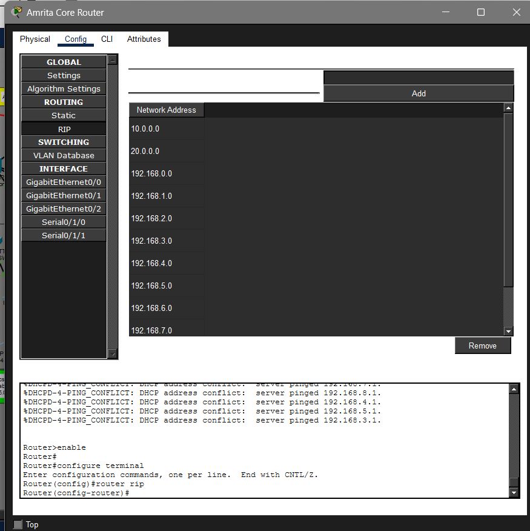
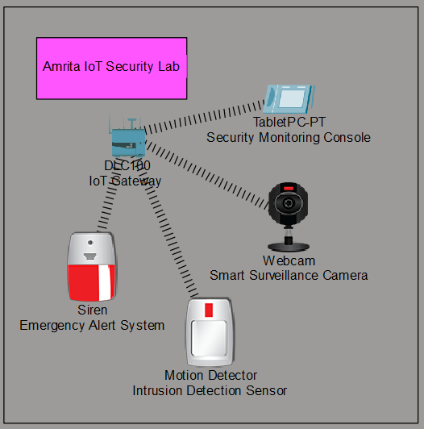
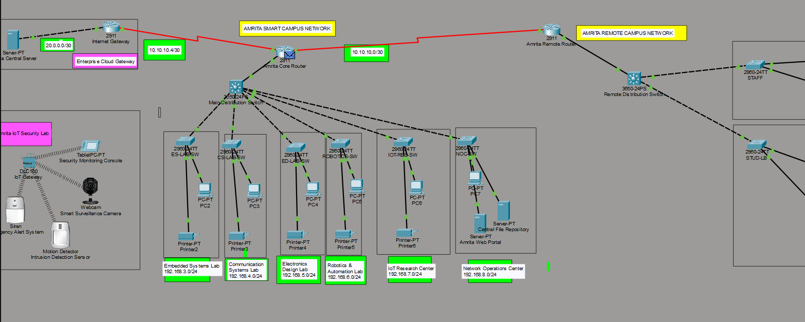

A Cisco Packet Tracer based enterprise smart campus network integrating VLAN segmentation, WAN communication, RIP Version 2 routing, centralized server infrastructure and IoT enabled security systems.
Mukunthan M — AM.EN.U4ECE23049
Neeraj Krishnan M — AM.EN.U4ECE23053
U K Ramkrishna — AM.EN.U4ECE23063
The “Amrita Smart Campus Network” project was designed and implemented using Cisco Packet Tracer to simulate a scalable and secure university enterprise network architecture.
The project connects a main campus and a remote campus through WAN serial links using RIP Version 2 dynamic routing.
Multiple VLANs were created to segment laboratories and administrative departments with centralized server infrastructure, DHCP services and IoT based security monitoring.

Department-wise VLAN separation for secure communication.
Dynamic routing between campuses using RIP v2 protocol.
Serial WAN connection between smart campus networks.
Automatic IP address allocation across departments.
Smart surveillance and intrusion detection system.
Web hosting and file repository management.
| Department | Network |
|---|---|
| Embedded Systems Lab | 192.168.3.0/24 |
| Communication Systems Lab | 192.168.4.0/24 |
| Electronics Design Lab | 192.168.5.0/24 |
| Robotics & Automation Lab | 192.168.6.0/24 |
| IoT Research Center | 192.168.7.0/24 |
| Network Operations Center | 192.168.8.0/24 |
| Faculty Administration | 192.168.9.0/24 |
| Remote Student Innovation Lab | 192.168.10.0/24 |




The project successfully demonstrates enterprise-level smart campus networking concepts including VLAN segmentation, WAN routing, centralized services, inter-campus communication and IoT integration using Cisco Packet Tracer.